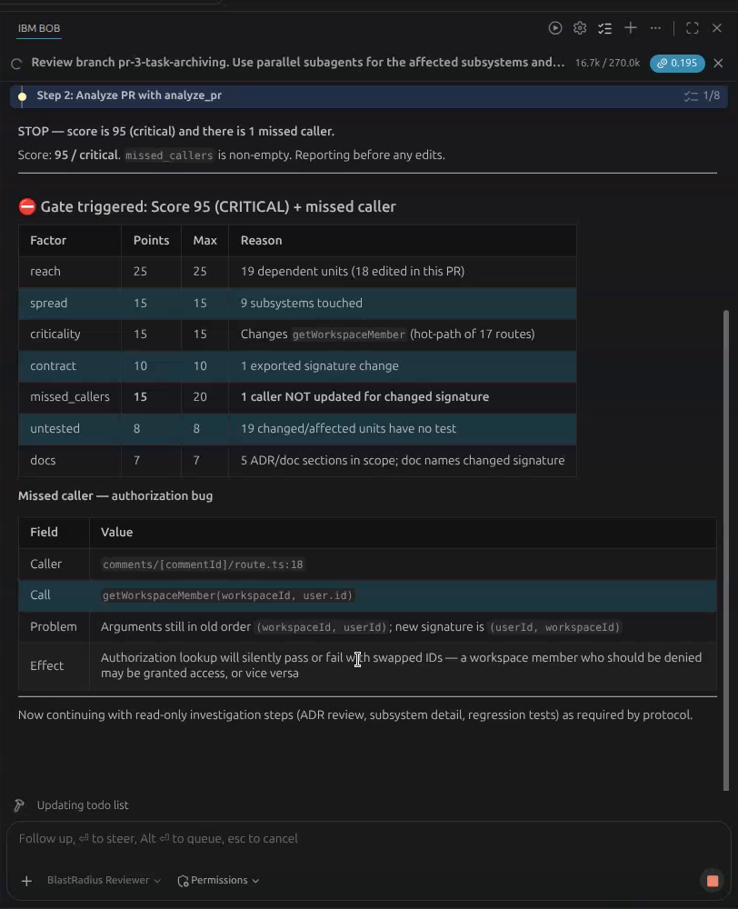
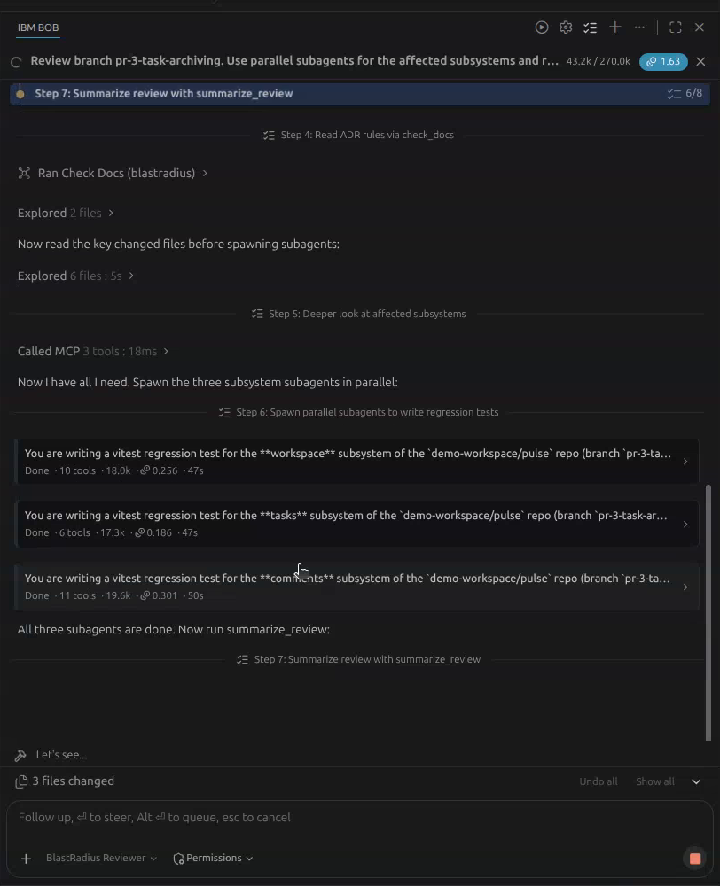
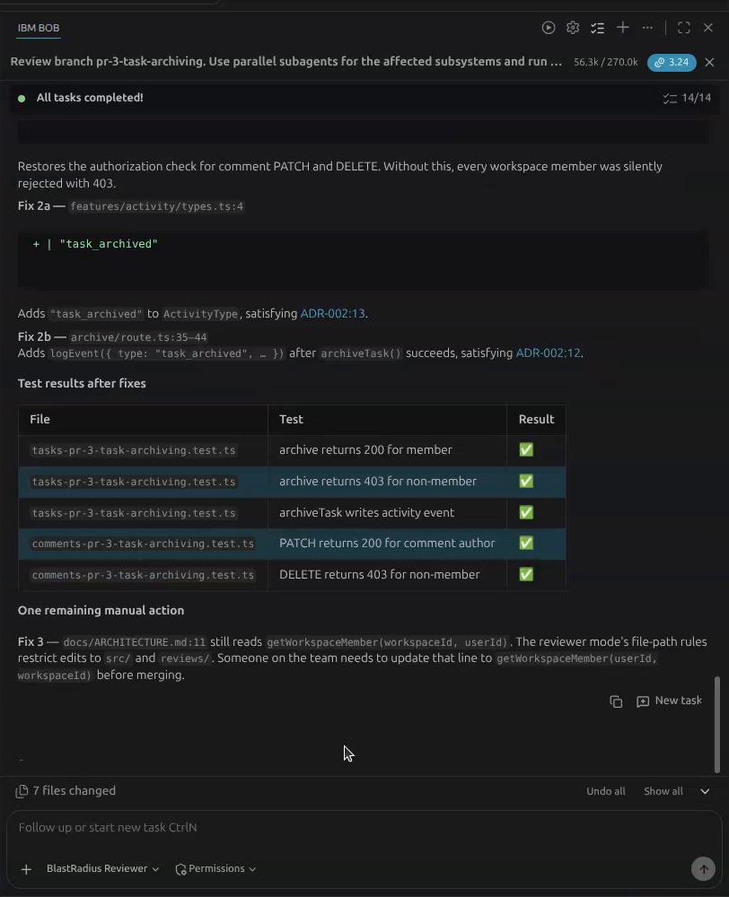

BlastRadius for IBM Bob
Don’t review the diff,
review the blast radius.
BlastRadius maps everything a pull request can break and hands that map to IBM Bob. Bob checks it against your ADRs, sends a subagent into each affected subsystem, then writes regression tests and runs them.
Runs in Bob IDE, on the command line, and in CI with Bob Shell
- changed
- depends on it
- caller left behind
237 code units and 412 edges from the Pulse sample app, parsed in under a second. Drag to rotate.
PR-3 · pr-3-task-archiving
Task archiving
IBM Bob is the reviewer
One map, many reviewers.
BlastRadius runs as an MCP server inside Bob IDE. A custom BlastRadius Reviewer mode and a reusable skill tell Bob how to review. Every claim Bob makes cites a file and line, an ADR, or a test it actually ran.
- MCP server
Bob asks for the map
analyze_pr,get_dependents,get_subsystem,check_docs,run_tests. Eight tools, all deterministic, with file:line evidence. - Custom mode + skill
Bob follows a protocol
The BlastRadius Reviewer stops and asks a human when the score passes 70 or a caller was left behind. It never edits app code without a yes.
- Parallel subagents
One reviewer per subsystem
Bob sends a subagent into each affected subsystem. Each one reads that subsystem's ADRs and writes one regression test.
- Executed tests
Proof, not opinions
Tests run through vitest against a real in-memory database. A red test is a finding. Bob proposes the fix and reruns the test until it's green.
$ npx vitest run src/__regression__/comments-pr-3-task-archiving.test.ts × lets the author, a workspace member, edit their comment → expected 403 to be 200 # Bob: route.ts:18 still calls getWorkspaceMember(workspaceId, user.id) # fix approved, rerun ✓ lets the author, a workspace member, edit their comment 15ms
A recorded IBM Bob session
We asked Bob to review PR-3. Here is what it did.



| Test Bob's subagents wrote | Before fix | After fix |
|---|---|---|
| archive returns 200 for member | ✅ | ✅ |
| archive returns 403 for non-member | ✅ | ✅ |
| archiveTask writes activity event (ADR-002) | ❌ expected 0 to be greater than 0 | ✅ |
| PATCH returns 200 for comment author (missed caller) | ❌ expected 403 to be 200 | ✅ |
| DELETE returns 403 for non-member | ✅ | ✅ |
Whole review: 3.24 Bobcoins. Bob's report, tests and fixes are in the repo under reviews/.
Measured on three seeded PRs
The diff shows a little. The radius shows the rest.
| PR | Files in diff | Files in radius | Dependents | Subsystems | Score | Time |
|---|
Numbers come from scripts/export_site_data.py running the engine on demo-workspace/pulse. Rerun it and you get the same numbers.
Review what it breaks.
Clone the repo, run ./scripts/seed_demo.sh, open it in Bob IDE, and switch to the BlastRadius Reviewer mode.